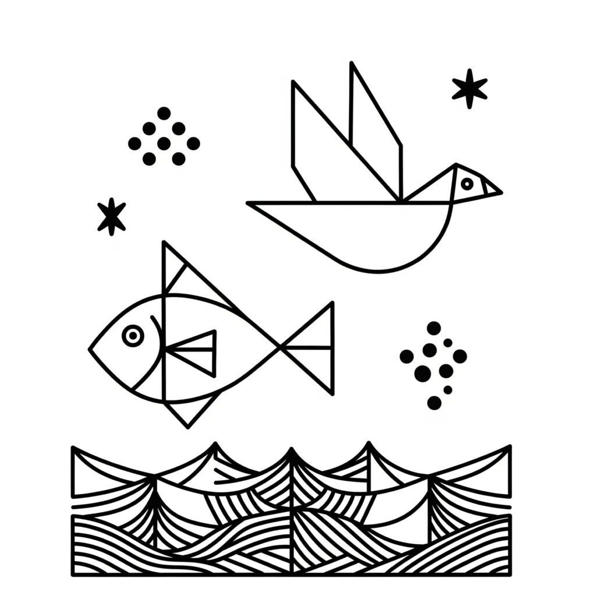

"For what can be known about God is plain to them, because God has shown it to them.
For his invisible attributes, namely, his eternal power and divine nature, have been clearly perceived, ever since the creation of the world, in the things that have been made." — Romans 1:19-20
Genesis 1 works almost like a master template that keeps getting echoed throughout the whole Bible. The first chapter of Genesis is not a literal account of external events but a precise record of how consciousness constructs and enforces identity. Each "day" follows an identical courtroom sequence: Elohim (the Judges / the court) declare ("God said"), Elohim enforces ("it was so"), and Elohim delivers a verdict ("it was good"). This three-beat pattern is the Linguistic Engine operating in full. Water, earth, light, and seed are symbols of how latent identity assumes form and is held in place by the governing laws of creation — not by force of will, but by the quiet authority of imagination fully occupying a state: the field of awareness, having consented to a particular identity, becoming the very atmosphere in which that identity breathes and solidifies. This field is the Promised Land. Not a territory on any map, but the boundless interior landscape of awareness itself — the land flowing with milk and honey is consciousness flowing with fulfilled assumption, and it is always already given to whoever will cross into it and dwell there as an inhabitant rather than a wanderer. YHVH/LORD — present consciousness — does not petition for a reality; it imagines from within one, feeling it as the only truth the field knows, and Elohim, the Judges and Rulers of that I AM, execute the outcome without deviation. Imagination here is not invention or fantasy. It is awareness in its creative act — the inner eye not looking at a desired state but looking as it, and by that silent inhabitation, seeding the land that was always promised.
The Symbolic Power of Seven
The number seven marks the completion of a full enforcement cycle within consciousness. Seven days do not record the passage of time—they record the full sequence by which a presented I AM moves from declaration through enforcement to settled rest. Elohim cannot be partially satisfied; the cycle runs to its conclusion.
This pattern recurs deliberately across Scripture. Jesus speaks of forgiving "seventy times seven," pointing not to arithmetic but to the inexhaustible right of YHVH/LORD to re-file the I AM—to amend the identity presented to Elohim until the desired verdict is enforced. In Genesis, Lamech invokes the same seventy times seven, showing that cycles of consequence and restoration operate within the same bounded jurisdiction. In the account of Mary Magdalene, seven demons cast out represent the dismantling of seven contradictory I AM filings—Legion dissolved so that one unified, governing identity could be presented and enforced by Elohim.
Seven is always the number of a complete courtroom cycle: identity presented, judges convened, statutes applied, verdict delivered, rest entered.
For a more detailed analysis of the occurrence of the number seven in scripture, please see The 94 Seven Days
In The Beginning: Before the First Filing
Before Day One, no identity has been presented. YHVH/LORD—present consciousness—exists, but Elohim has received no claim to enforce. The void is not emptiness; it is the unjudged state. The courtroom is assembled but no case has been filed.
In the beginning God made the heavens and the earth. And the earth was waste and without form; and it was dark on the face of the deep: and the Spirit of God was moving on the face of the waters. — Genesis 1:1–2
The Spirit of God moving on the face of the waters is YHVH/LORD surveying unordered potential—present consciousness hovering over everything that could be assumed before any I AM has been spoken. Elohim is present but idle. No declaration has been made, so no enforcement can begin.
When Genesis later declares "Let us make man in our image," it is Elohim convening to establish identity as the primary legal and creative unit. The plural deliberation—let us—reveals the judicial structure of consciousness: multiple governing voices coordinating to define what will be held as the ruling I AM. Once that identity is established, Elohim is bound to manifest it.
The Seven Days: The Courtroom Sequence in Full
Day One: Let There Be Light
The first declaration — awareness distinguished from unawareness
And God said, Let there be light: and there was light. And God saw that the light was good: and God made a division between the light and the dark. — Genesis 1:3–4
The three-beat sequence appears immediately and completely. "God said" — Elohim, the Judges and Rulers of I AM, presents the first declaration into the void: a claim has been filed. "There was light" — enforcement is instant and total; Elohim does not deliberate once the declaration is made. "God saw that it was good" — the judicial verdict is delivered; the outcome aligns with the statute and is confirmed as valid.
The division between light and dark is not decoration — it is the first jurisdictional ruling. YHVH/LORD can now distinguish awareness from unawareness, the assumed I AM from the unchosen void. Without this division, no subsequent declaration is possible. The engine requires a functioning court before further cases can be heard.
Note that on Day One Elohim does not name the darkness. Only the light receives a name — only the assumed identity is given legal standing. The unchosen state is acknowledged but not filed.
Day Two: The Firmament
Inner order established — the jurisdiction of cause separated from reflection
And God said, Let there be a solid arch stretching over the waters, dividing the waters from the waters… and it was so. — Genesis 1:6–7
"God said" — Elohim declares the structural partition. "It was so" — enforcement is immediate; the architecture of inner cause and outer reflection is locked into place. On Day Two, however, no verdict of "it was good" is recorded. The firmament is necessary infrastructure — it establishes the jurisdictional boundary — but it is not yet a complete identity claim. The courtroom is being constructed, not yet ruling.
The waters above are the assumed I AM — the identity held within consciousness. The waters below are the manifest conditions — the reflection that Elohim enforces outward. YHVH/LORD must know that the waters above govern the waters below, not the reverse. The firmament is the statute that prevents present circumstances from being mistaken for the ruling identity.
Day Three: Dry Land and Seed Within Itself
Stable ground and self-contained identity — the seed carries its own verdict
And God said, Let the waters under the heaven come together in one place, and let the dry land be seen: and it was so… And God said, Let the earth put out grass and plants giving seed, and fruit-trees giving fruit, with their seeds in them, after their sort: and it was so. And God saw that it was good. — Genesis 1:9–12
Two declarations on Day Three, each followed by immediate enforcement. "God said… it was so" — twice. The doubled pattern signals a deepening of identity: first the stable ground is established, then the seed is planted within it. Elohim enforces both in sequence, and the combined verdict — "it was good" — confirms the whole.
“So is the kingdom of God, as if a man should cast seed into the ground..." — Mark 4:26
The seed is the compressed I AM: it already contains the full pattern of what it will become. Elohim enforces reproduction "after their sort" — the statute is absolute. Whatever identity is planted, Elohim will grow it according to its nature. An assumed I AM of abundance grows abundance. An assumed I AM of lack grows lack. The seed does not negotiate with the soil; Elohim enforces after kind without exception.
Dry land rising from the waters mirrors Thread 5 of the Key — reversal from present circumstance to assumed identity. YHVH/LORD as Joseph in the pit is surrounded by water; the dry land of the assumed I AM as ruler must emerge before Elohim can enforce the palace.
Day Four: Sun, Moon, and the Governance of Time
Governing lights appointed — directing and reflective forces brought under statute
And God said, Let there be lights in the arch of heaven, for a division between the day and the night; and let them be for signs, and for marking the changes of the year, and for days and for years… and it was so. And God saw that it was good. — Genesis 1:14–18
"Let there be lights in the arch of heaven" — Elohim is not appointing sources of illumination. The court is appointing rulers. The text names the purpose first: signs, appointed times, days, and years. These are instruments of governance, not of light. The court places them not in open space but in the firmament — the boundary it established on day two when it divided the waters and named that division heaven. The firmament is the structural boundary between the court's governing structure and the experience available to consciousness below it. The governing lights are fixed inside that boundary so that what cannot be seen from below can still be read by its signs.
Day three established the seed bearing fruit after its kind — but a reproduction cycle requires a governing framework to run through. Day four provides it. The seasons — moadim, appointed meetings — are not weather conditions. They are the court's fixed convocations: the moments at which Elohim calls the filing forward and advances the assumed I AM toward its delivery. Sowing, growth, harvest, and rest are the four phases of the judicial cycle. The lesser light rules the interval of waiting — holding the assumed identity through the period in which nothing is yet visible but the court's count continues. Elohim enforces across the full cycle, through every appointed convocation, because the court governs time as well as form.
Isaiah confirms the same principle of amplified governing light when the work of identity is complete:
And the light of the moon will be as the light of the sun, and the light of the sun will be seven times greater, as the light of seven days, in the day when the Lord puts oil on the wounds of his people, and makes them well from the blows they have undergone. — Isaiah 30:26
Seven times greater — the full enforcement cycle multiplied. When YHVH/LORD presents the healed, restored I AM, Elohim does not enforce it partially. The verdict is total.
Day Five: Life in Water and Air
The governed identity becomes animate — the assumed I AM begins to move and multiply within the established framework
And God said, Let the waters be full of living things, and let birds be in the air over the earth. And God made the great sea-beasts, and every sort of living and moving thing with which the waters were full, after their sort, and every sort of winged bird, after its sort: and God saw that it was good. — Genesis 1:20–21
"God said" — Elohim declares animation into the framework that Days Three and Four have established. "God made" — enforcement at scale; living things fill the waters and the sky. "It was good" — the verdict confirms that the assumed identity is now alive within consciousness, not merely declared or governed.
The sequence is precise and cannot be reversed. Day Three planted the seed — the compressed I AM carrying its full pattern within itself. Day Four appointed the governing lights — the ruling framework of seasons and appointed times through which Elohim advances the assumed identity toward its delivery. Day Five is what becomes possible only when both are in place. The seed has been planted. The governance is established. Now the assumed I AM begins to move.
Water and air are not incidental to the image. Throughout the Genesis vocabulary, water is the deep inner state — emotion, the felt reality of the assumed I AM. Air is the invisible medium of consciousness — the atmosphere of thought in which identity breathes. Living creatures filling the waters and moving through the air are the felt and thought confirmation that the assumed I AM has taken root within consciousness. The enforcement is not structural on Day Five. It is vital. The I AM is alive.
This is the moment in the courtroom when the filed identity ceases to be paperwork and becomes testimony. The court does not only receive declarations — it receives living witnesses. Elohim enforces after their sort: feeling after the kind of the assumed identity, not after the kind of present circumstance. Thought moving after the kind of the assumed identity, not after the kind of visible conditions. The living creatures multiply within the governed framework because the court's statute on Day Five is not merely enforcement — it is blessed multiplication.
The first blessing in the entire narrative appears here:
And God gave them his blessing, saying, Be fertile and have increase, making all the waters of the sea full, and let the birds be increased in the earth. — Genesis 1:22
The first blessing is not given to light, or to dry land, or to the seed, or to the governing lights. It is given to living, moving things. Because blessing — the judicial order for multiplication — can only be applied once the assumed I AM is animate. Elohim cannot multiply what has not yet come alive within consciousness. The blessing is not sentiment. It is a statute of increase applied to a living filing.
Note what Day Five does not yet produce: dominion. The living creatures of Day Five fill their domains — water and air — but they do not govern them. Governance was established on Day Four. Life and multiplication arrive on Day Five. But the identity that holds dominion over every living thing within consciousness has not yet been established. That is Day Six. Day Five is not the apex — it is the penultimate phase, the animated, multiplying inner world waiting to be brought under the full authority of the image of God.
The Revelation vocabulary confirms the Day Five mechanism in reverse. When the fifth trumpet sounds in Revelation 9, living creatures arise from the pit — not to bless and multiply but to torment. The same water and air vocabulary, the same animate, moving life — but now enforcing the consequences of a fragmented or inverted I AM. Elohim enforces after kind in both directions. The statute of Day Five is absolute: whatever living identity is presented to the court will be blessed with increase. The only variable is which I AM the living movement is after.
Day Six: Creatures and Man in God's Image
Full embodiment — the I AM is lived, not merely assumed
And God said, Let the earth give birth to all sorts of living things, cattle and all things moving on the earth, and beasts of the earth after their sort: and it was so… And God said, Let us make man in our image, after our likeness… And God made man in his image, in the image of God he made him; male and female he made them. And God gave them his blessing and said to them, Be fertile and have increase… — Genesis 1:24–28
"God said… it was so" — Elohim declares and enforces the full range of living creatures. Then the plural deliberation: "Let us make man." This is Elohim convening as a full court — the Judges and Rulers of I AM coordinating to establish the highest identity claim: man made in the image of God, which is to say, YHVH/LORD assuming an I AM that mirrors the full creative authority of Elohim itself.
This is Thread 2 and Thread 4 of the Key converging. The many governing voices of consciousness (Elohim, plural) agree upon one ruling identity (man in God's image). The Shepherd has gathered the Twelve. The assumed I AM is no longer a single seed or a single light — it is a fully embodied, governing identity with dominion over every other state within consciousness.
Elohim blesses again and issues the dominion statute: the assumed I AM is to have authority over every creature — every inner state, every impulse, every lesser identity — that moves within the internal world. The verdict on Day Six is the most expansive in the narrative:
And God saw everything which he had made and it was very good. — Genesis 1:31
"Very good" — not merely good, as on previous days, but the amplified verdict. The full identity has been embodied. Elohim confirms it completely.
Day Seven: Rest — The Sabbath
The case is closed — Elohim's enforcement is complete
And on the seventh day God came to the end of all his work; and on the seventh day he took his rest from all the work which he had done. And God gave his blessing to the seventh day and made it holy: because on that day he took his rest from all the work which he had made and done. — Genesis 2:2–3
On Day Seven there is no "God said." There is no new declaration, no new enforcement, no new verdict. The case is closed. Elohim rests — not from exhaustion but because the statute has been fully executed. The I AM has been presented, enforced at every level, declared very good, and the assumed identity is now the governing reality. There is nothing further to legislate.
The Sabbath is the inner state in which YHVH/LORD no longer strives to convince Elohim. The filing is complete. The judgement is final. The rest is the certainty that what was declared is already enforced — the confidence of the petitioner who has heard the gavel fall in their favour and leaves the courtroom without doubt. To break the Sabbath — to continue anxiously re-filing the same claim — is to tell Elohim that the verdict was not trusted. Rest is the proof of trust.
God blesses the seventh day and makes it holy. Elohim places the completion of the enforcement cycle under special protection: the rest that follows a fully assumed I AM is not to be disturbed by contradiction.
The Seven Movements: The Courtroom Sequence Complete
Through seven symbolic days, Genesis records the full operation of the Linguistic Engine — from unjudged void to enforced identity held in sacred rest:
- Day One — Declaration: YHVH/LORD presents the first I AM. Elohim declares, enforces, and delivers the verdict: it was good.
- Day Two — Jurisdiction: Elohim establishes the structural boundary between inner cause (waters above) and outer reflection (waters below). The firmament protects the assumed I AM from being overwritten by circumstance.
- Day Three — Planting: Elohim enforces stable ground and plants the seed. The I AM is self-contained — it carries the full pattern of what it will become. Elohim enforces after kind.
- Day Four — Governance: Elohim appoints ruling lights. The assumed I AM governs continuously — by day through directed attention, by night through sustained identity.
- Day Five — Animation: Elohim commands the assumed I AM to become alive within consciousness — to move, multiply, and fill the inner world. Elohim blesses and orders increase.
- Day Six — Embodiment: Elohim convenes in full court, establishes man in the image of God, and delivers the amplified verdict: it was very good. The assumed I AM now holds dominion over every inner state.
- Day Seven — Rest: The case is closed. Elohim rests. The assumed identity is fully enforced. YHVH/LORD enters the Sabbath — the sacred certainty that what was declared is already done.
Every desire sets this cycle in motion again. Every "Let there be light" is a new filing presented to the Judges and Rulers of I AM. The engine does not sleep — Elohim enforces continuously, impartially, and completely. The only variable is what YHVH/LORD presents as the ruling I AM.
When a land transgresses, it has many rulers, but with a man of understanding and knowledge, its stability will long continue. — Proverbs 28:2
Many rulers is the fragmented court — Legion, the scattered I AM filings in conflict. Understanding and knowledge is YHVH/LORD presenting one clear, sustained Ehyeh/I AM to Elohim. Stability is the Sabbath enforced: the land — the inner territory of consciousness — held firm under a single governing identity, confirmed good, and at rest.
About The Author | From The Creation Story | Genesis 1 Series | Numbers: Seven